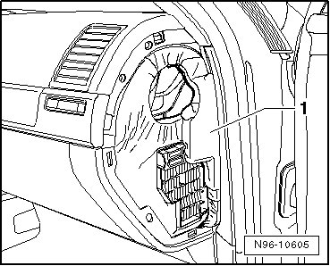
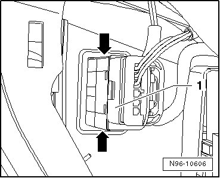
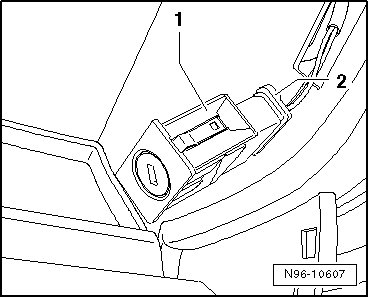

Front Passenger Airbag -Off- Key Switch, From 12.06
Instrument Panel Lamps and Switches
Front Passenger Airbag -Off- Key Switch, from 12.06
The Front Passenger Airbag -Off- Key Switch (E224) is located in the glove compartment on the passenger side.
Front Passenger Airbag -Off- Key Switch, vehicles through 11/06, removing and installing --> [ Front Passenger Airbag -Off- Key Switch, through 11.06 ] Center Console Lamps and Switches
Removing
- Switch off ignition, switch off all electrical consumers and remove ignition key.
- Remove right side cover of instrument cluster.
- To gain access to Front Passenger Airbag -Off- Key Switch (E224), press insulating material - 1 - to side slightly.

- Press both retaining tabs - arrows - together and slide Front Passenger Airbag -Off- Key Switch (E224) - 1 - inward through glove compartment.

- Open glove compartment cover.

- Release and disconnect connector - 2 - and remove Front Passenger's Airbag -Off- Key Switch (E224) - 1 - from vehicle.
Installing
Install in reverse order of removal.